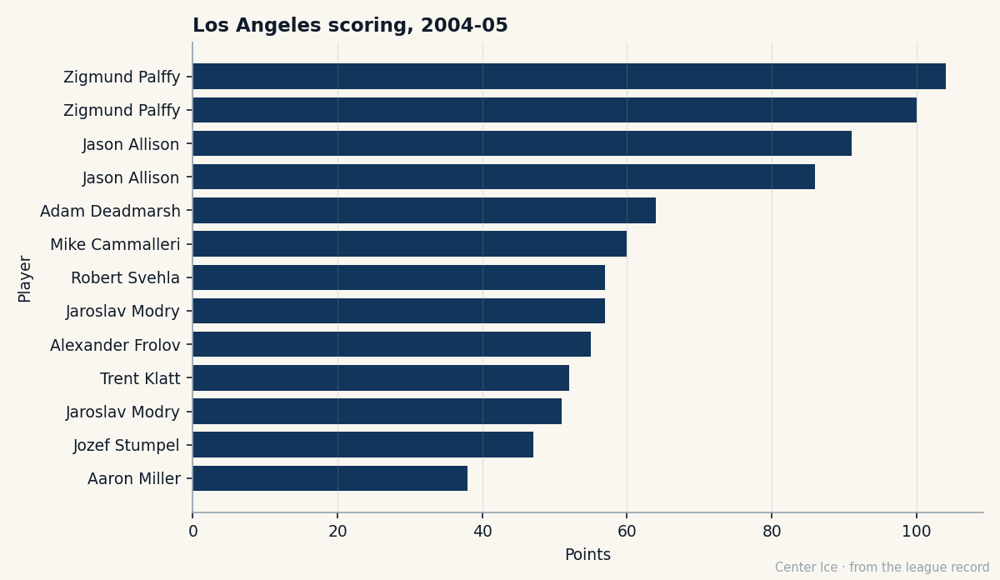

The Education of Mike Cammalleri: 20 Points at 11.8 Minutes, Then 60 at 20.8
He skipped the OHL for Michigan, went 49th overall in 2001, and at 22 he is the King whose season moved. One year left at $1.10M.
 Carol BinghamFeatures writer · Rinkside
Carol BinghamFeatures writer · Rinkside Mike Cammalleri83 played 61 games for the
Mike Cammalleri83 played 61 games for the  Los Angeles Kings Kings this season and scored 60 points. A year earlier he played 69 games and scored 20. He is 22, born in Richmond Hill, Ontario, and he has one year left on a contract worth $1.10M.
Los Angeles Kings Kings this season and scored 60 points. A year earlier he played 69 games and scored 20. He is 22, born in Richmond Hill, Ontario, and he has one year left on a contract worth $1.10M.
Los Angeles won 79 points and missed the playoffs. Its right wing is the club's open question. The Bureau's Book grades him 83 overall, six above his base of 79 on the Development Index, and the Book's potential figure for him is 98. A season ago he averaged 11.8 minutes a night.

The change is minutes. Cammalleri averaged 20.8 minutes a night this season. In 817 minutes he scored 11 goals and 9 assists. In 1268 minutes he scored 23 and 37. He wore an A on his sweater for the first time this season.
| season | gp | goals | assists | points | minutes per game |
|---|---|---|---|---|---|
| 2003-04 | 69 | 11 | 9 | 20 | 11.8 |
| 2004-05 | 61 | 23 | 37 | 60 | 20.8 |
Six points is the largest rise the Index carries this edition, and Cammalleri shares it with a handful of others. The Book's own base on him was 79, a season ago's reading. He has gone from a fourth-line share of the ice to the second-largest on the club's front end, and the Kings have noticed.
The road he took
The St. Michael's Majors of the Ontario Hockey League picked him in the OHL priority draft and he declined, to keep his American college eligibility. He played Junior A for the Bramalea Blues of the OPJHL instead. At 15 he was the league's rookie of the year in 1997-98; he was an all-star the following season, and the Ontario Hockey Association's top draft prospect after 103 points in 41 games.
Michigan came next, in 1999. He scored 13 goals in 39 games as a freshman, led the Wolverines with 29 goals as a sophomore, made the first-team CCHA all-star team, and reached the 2001 Frozen Four. The Los Angeles Kings Kings drafted him 49th overall in 2001, in the second round, and he stayed in school.
That October he played the Cold War against Michigan State, an outdoor game that drew 74,554 fans, then a world record for a hockey game. A hip-flexor injury nearly kept him out. He figured in all three Michigan goals in a 3-3 draw, and finished 2001-02 with 23 goals and 44 points in 29 games, a CCHA championship, first-team All-American honours and the West Regional's most valuable player award.
Cammalleri has described his family, half Italian and half Jewish, as "a family of deep-rooted closeness and unity coming from very desperate times."
What the Book has
The Bureau's grades on him read 93 for deking, 93 for passing and 90 for puck skills, with 89s in agility, heroism and speed. The physical side is thinner: FIGH 50, SPBI 55, PCBI 60. He is listed at 69 inches and 180 pounds.
He has never played a full season. He got 69 games in 2003-04 and 61 this year. An elbow cost him a stretch in December, and the record has him back on 2004-12-14.
The room around him
The Kings spent $52.43M and won 79 points, $0.66M a point. Revenue was $73.32M, attendance 13627 a night, the ticket $78.  Zigmund Palffy83 led the club with 104 points in 66 games at 33.
Zigmund Palffy83 led the club with 104 points in 66 games at 33.  Jason Allison82 had 91 in 77 at 30.
Jason Allison82 had 91 in 77 at 30.  Adam Deadmarsh83, 87 overall, is out with a knee and due back on 2005-06-04. In goal,
Adam Deadmarsh83, 87 overall, is out with a knee and due back on 2005-06-04. In goal,  Roman Cechmanek88 won 28 of 66 with a 2.82 GAA.
Roman Cechmanek88 won 28 of 66 with a 2.82 GAA.
 Alexander Frolov75, 22, scored 55 points in 62 games at 22.8 minutes a night, which gives the club two young forwards taking real shifts. Allison ($6.70M), Deadmarsh ($2.80M) and Cechmanek ($3.30M) each have one year left. So does Cammalleri, at $1.10M.
Alexander Frolov75, 22, scored 55 points in 62 games at 22.8 minutes a night, which gives the club two young forwards taking real shifts. Allison ($6.70M), Deadmarsh ($2.80M) and Cechmanek ($3.30M) each have one year left. So does Cammalleri, at $1.10M.
One year at $1.10M
The Kings took a college forward with the 49th pick and waited. They have a winger who scored 60 points in 61 games at 22, a growing share of the ice, an elbow on the December page, and one year left at $1.10M.
He is the youngest of the men whose Kings contracts come due this summer. Palffy is 33 and Allison and Deadmarsh are 30. Los Angeles won 73 points in 2003-04 and 79 this season.